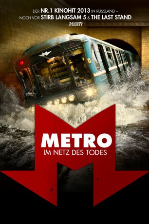
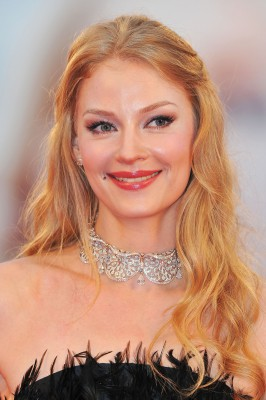

#696 Metro: Im Netz des Todes
 gesehen am 17.08.2015
gesehen am 17.08.2015
 
 IMDB-Wertung: 6.6 / 10
IMDB-Wertung: 6.6 / 10  Metascore: 0
Metascore: 0 
Es scheint ein ganz normaler Freitag in Moskau zu sein: Morgens ist es eisig kalt, aber die Verkehrswelt ist in Ordnung. Nur einige Stunden später kommt es zur Katastrophe und aus dem Moskwa, dem riesigen Fluss der Hauptstadt Russlands, dringt auf einmal jede Menge Wasser über das undicht gewordene Deckenwerk in das Innere der Kanäle ein. Es gibt nur einen Mann, der die russische Bevölkerung vor den Geschehnissen hätte warnen können, doch ausgerechnet der hockt in einer Ausnüchterungszelle und ist kaum ansprechbar. Die beiden Rivalen Garin und Konstantinov, die um die Gunst der wunderschönen Irina kämpfen, sind scheinbar die einzigen, die dazu fähig sind, eine Gruppe der Überlebenden aus den tödlichen Schächten zu führen...
Jahr: 2013
Dauer: 133 Minuten
FSK: 16
Land: Russland Studio: Koch MediaTonspuren:
Untertitel: Deutsch,
Auflösung: 720p (1280x544) Größe: 4044 MB
Genre: Action, Thriller
Regisseur: Anton Megerdichev
Drehbuch: Dmitry Safonov, Denis Kuryshev, Viktoriya Evseeva, Anton Megerdichev
Soundtrack: Yuriy Poteenko
Darsteller:
- Sergey Puskepalis als Garin
-  Svetlana Khodchenkova als Irina
- Aleksandr Yakovlev als Driver of Train 17
- Anatoliy Belyy als Konstantinov
- Anfisa Vistingauzen als Ksyusha
- Aleksey Bardukov als Denis
- Katerina Shpitsa als Alisa
- Elena Panova als Galochka
- Stanislav Duzhnikov als Mikhail
- Sergey Sosnovskiy als Sergeich
- Yaroslav Zhalnin als Zimin
- Nikolay Ryabkov als Shevchenko
- Mikhail Fateyev als Klokov
- Ivan Makarevich als Train Driver's Assistant
- Vladimir Sterzhakov als Burov
- Aleksandr Fisenko als Member of Rescue Team 18
- Maksim Linnikov als Member of Rescue Team 18
- Ivan Lapin als Member of Rescue Team 18
- Oleg Zabolotnyy als Head of Ministry of Emergency Situations
- Kirill Pletnyov als Nazimov
- Dmitriy Orlov als Cameraman
- Anatoliy Kotenyov als Mayor
- Dmitriy Vysotskiy als Smiling Policeman
- Aleksandr Zhurman als Grim Policeman
- Ekaterina Direktorenko als Irina's Friend
- Aleksandr Armer als Sidimych
- Karen Martirosyan als Taxi Driver
- Tatyana Anisimova als
- Sergey Afanasev als
- Polina Bagautdinova als
- Pyotr Belyshkov als
- Lina Borodach als
- Ivan Borodach als
- Denis Bokuradze als
- Yuliya Bokuradze als
- Valentin Varetskiy als
- Aleksandr Vdovin als
- Nadezhda Volkova als
- Aleksey Gavrilov als
- Andrey Gavrilov als
- Elena Golyanova als
- Boris Goretov als
- Sergey Guryev als
- Vladislav Dorokhov als
- Lyubov Dolgikh als
- Yelena Dyudyukina als
- Vyacheslav Dyakin als
- Irina Evdoshchuk als
- Yury Yegorov als
- Aleksey Yelkhimov als
Datei: X:\2013(I-M)\Metro Im Netz des Todes (2013, FSK16, 1280x544).mkv seit 16.03.2015
Festplatte: HD 2013(I-Z)-2014(A-Z)
 Es gibt insgesamt 89 Filme in der Gruppe '2013(I-M)'
Es gibt insgesamt 89 Filme in der Gruppe '2013(I-M)'